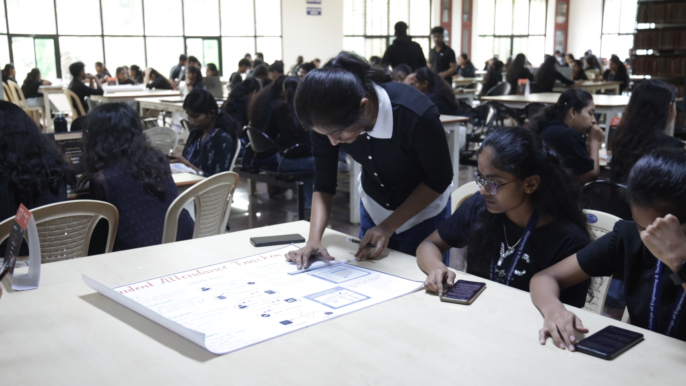
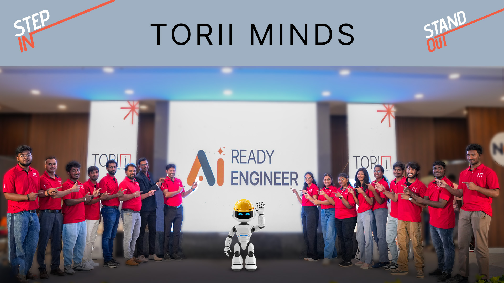
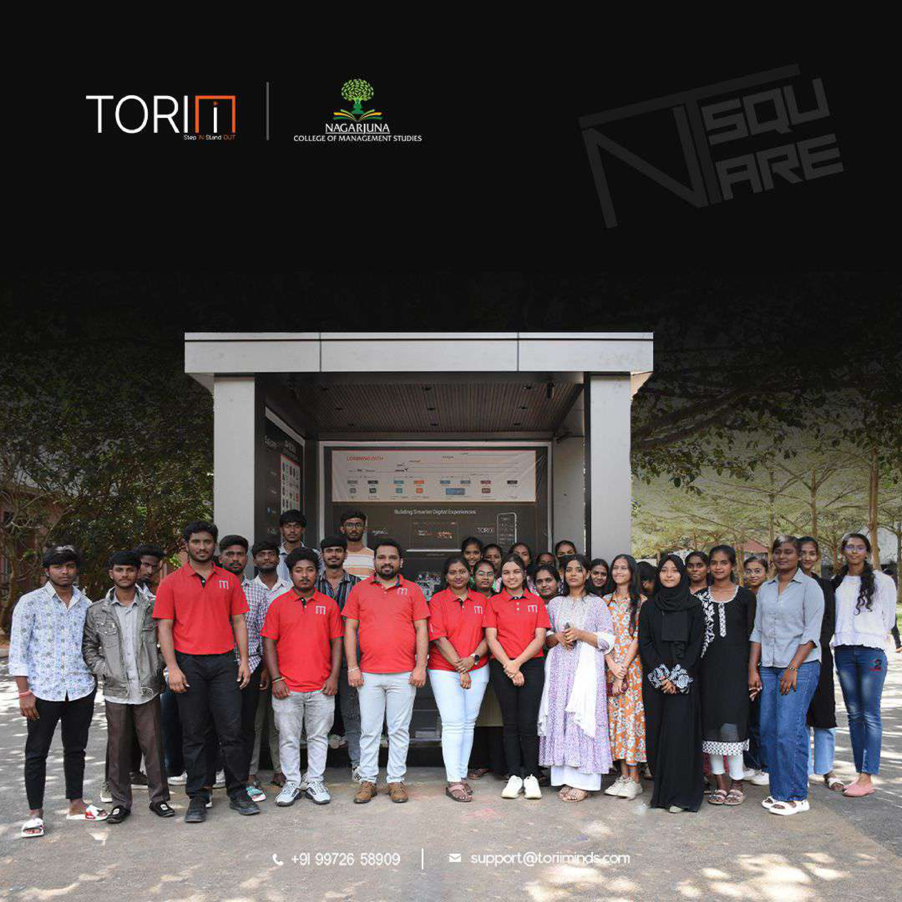

Embedding Claude AI into the everyday operational and academic cycles of NCET — initiating a foundational shift toward becoming a fully AI-skilled institute.
The strategic partnership between Nagarjuna College of Engineering and Technology (NCET) and Technical Hub has consistently focused on pushing academic boundaries.
Most recently, this collaboration has given the institution the explicit opportunity to explore entirely new domains within artificial intelligence, allowing NCET to unlock fresh potential across its faculty and student ecosystems.
Rather than treating AI as an isolated technical skill, Technical Hub has seamlessly embedded Claude AI into NCET's everyday operational and academic cycles — effectively initiating a foundational shift toward becoming a fully AI-skilled institute.
Well-curated initiatives engineered to engage the campus community at every level — demystifying advanced AI models and encouraging daily use through highly tailored, high-impact channels.
To build a deeply rooted AI culture, Technical Hub launched a series of well-curated awareness initiatives. Rather than deploying generic material, the strategy divided focus into highly tailored, high-impact channels:
Students saw first-hand how conversational AI clears blockers and accelerates everyday coding work.
Claude used to unpack difficult engineering concepts and outline projects in plain language.
Daily academic deliverables moved from hours of effort to fast, AI-assisted workflows.
Long-term institutional transformation requires structured infrastructure — shifting from standard computer facilities to specialized ecosystems through two deep integration tracks.

Physical laboratory spaces are being fully retrofitted and optimized into advanced environments dedicated to cognitive computing and AI application development.
These labs serve as central testing grounds where students build, stress-test, and deploy practical software solutions natively assisted by Claude.

Technical Hub has closely collaborated with NCET's academic board to systematically align the regular engineering curriculum with contemporary AI workflows.
By integrating specialized modules and core courses tailored around LLM architecture, prompt engineering, and collaborative AI development, students interact with modern industry tools as a core part of their credited coursework.
Standard computer facilities reimagined as cognitive-computing ecosystems.
Students build and ship practical software solutions assisted by Claude end to end.
Specialized modules embedded directly into the accredited engineering curriculum.
LLM architecture, prompt engineering, and collaborative AI as core, hands-on skills.
Accelerating the transition required deep technical expertise on the ground — so Technical Hub deployed dedicated, Claude-certified architects directly onto the NCET campus.

Going a significant step ahead, Technical Hub strategically deployed dedicated, Claude-certified architects directly onto the NCET campus. Having these highly skilled professionals co-located within the institution has radically shifted its digital landscape.
These certified experts provide real-time, production-level advisory services to both students and faculty — eliminating the traditional learning curve and guaranteeing a flawless, friction-free transition into a truly AI-skilled institution.
Hosting hands-on clinics that resolve real production-level issues for students and faculty alike.
Auditing ongoing student projects to ensure quality, rigour, and architectural soundness.
Aligning every campus innovation with modern cloud and AI architectural patterns.
The results stemming from this strategic alliance speak for themselves. Through well-curated awareness, modern infrastructure creation, and the dedicated guidance of deployed technical experts, a profoundly visible change has swept through Nagarjuna College of Engineering and Technology.
The usage of Claude and advanced AI has shifted from an occasional novelty to a primary driver of academic and operational execution. Technical Hub has not only unlocked the raw intellectual potential of the institution but has established an explicit, reproducible blueprint for the future of AI-driven technical education.
Campus-wide awareness turned Claude from novelty into daily academic practice.
Enrichment labs and an aligned curriculum future-proof the institution.
An explicit model for the future of AI-driven technical education.
Technical Hub × Nagarjuna College of Engineering & Technology — a blueprint for AI-driven technical education.